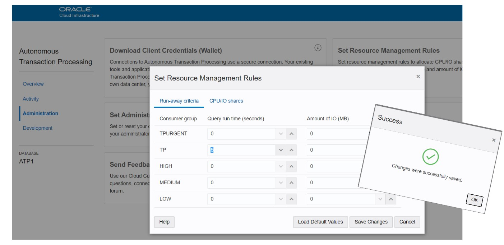

This was first published on https://www.dbi-services.com/blog/myth-nosql-vs-rdbms-relational-queries-are-unbounded/ (2020-07-21)
Republishing here for new followers. The content is related to the versions available at the publication date.
.
NoSQL provides an API that is much simpler than SQL. And one advantage of it is that users cannot exceed a defined amount of resources in one call. You can read this in Alex DeBrie article https://www.alexdebrie.com/posts/dynamodb-no-bad-queries/#relational-queries-are-unbounded which I take as a base for some of my “Myth of NoSQL vs RDBMS” posts because he explains very well how SQL and NoSQL are perceived by the users. But this idea of simpler API to limit what users can do is is quite common, precedes the NoSQL era, and is still valid with some SQL databases. Here I’m demonstrating that some RDBMS provide a powerful API and still can bound what users can do. Oracle Database has a resource manager for a long time, like defining resource limits on a per-service base, and those features are very simple to use in the Oracle Autonomous Database – the managed database in the Oracle Cloud.
I am using the example schema from the ATP database in the free tier, so that anyone can play with this. As usual, what I show on 1 million rows, and one thread, can scale to multiples vCPU and nodes. Once you get the algorithms (execution plan) you know how it scales.
06:36:08 SQL> set echo on serveroutput on time on timing on
06:36:14 SQL> select count(*) ,sum(s.amount_sold),sum(p.prod_list_price)
from sh.sales s join sh.products p using(prod_id);
COUNT(*) SUM(S.AMOUNT_SOLD) SUM(P.PROD_LIST_PRICE)
___________ _____________________ _________________________
918843 98205831.21 86564235.57
Elapsed: 00:00:00.092
I have scanned nearly one million rows from the SALES table and joined it to the PRODUCTS table, aggregated data to show the sum from both tables columns. That takes 92 milliseconds here (including network roundtrip). You are not surprised to get fast response with a join because you have read The myth of NoSQL (vs. RDBMS) “joins dont scale” 😉
Ok, now let’s say that a developer never learned about SQL joins and wants to do the same with a simpler scan/query API:
06:36:14 SQL> declare
l_count_sales number:=0;
l_amount_sold number:=0;
l_sum_list_price number:=0;
begin
-- scan SALES
for s in (select * from sh.sales) loop
-- query PRODUCTS
for p in (select * from sh.products where prod_id=s.prod_id) loop
-- aggregate SUM and COUNT
l_count_sales:=l_count_sales+1;
l_amount_sold:=l_amount_sold+s.amount_sold;
l_sum_list_price:=l_sum_list_price+p.prod_list_price;
end loop;
end loop;
dbms_output.put_line('count_sales='||l_count_sales||' amount_sold='||l_amount_sold||' sum_list_price='||l_sum_list_price);
end;
/
PL/SQL procedure successfully completed.
Elapsed: 00:02:00.374
I have run this within the database with PL/SQL because I don’t want to add network rountrips and process switches to this bad design. You see that it takes 2 minutes here. Why? Because the risk when providing an API that doesn’t support joins is that the developer will do the join in his procedural code. Without SQL, the developer has no efficient and agile way to do this GROUP BY and SUM that was a one-liner in SQL: he will either loop on this simple scan/get API, or she will add a lot of code to initialize and maintain an aggregate derived from this table.
So, what can I do to avoid a user running this kind of query that will take a lot of CPU and IO resources? A simpler API will not solve this problem as the user will workaround this with many small queries. In the Oracle Autonomous Database, the admin can set some limits per service:

This says: when connected to the ‘TP’ service (which is the one for transactional processing with high concurrency) a user query cannot use more than 5 seconds of elapsed time or the query is canceled.
Now if I run the statement again:
Error starting at line : 54 File @ /home/opc/demo/tmp/atp-resource-mgmt-rules.sql
In command -
declare
l_count_sales number:=0;
l_amount_sold number:=0;
l_sum_list_price number:=0;
begin
-- scan SALES
for s in (select * from sh.sales) loop
-- query PRODUCTS
for p in (select * from sh.products where prod_id=s.prod_id) loop
-- aggregate SUM and COUNT
l_count_sales:=l_count_sales+1;
l_amount_sold:=l_amount_sold+s.amount_sold;
l_sum_list_price:=l_sum_list_price+p.prod_list_price;
end loop;
end loop;
dbms_output.put_line('count_sales='||l_count_sales||' amount_sold='||l_amount_sold||' sum_list_price='||l_sum_list_price);
end;
Error report -
ORA-56735: elapsed time limit exceeded - call aborted
ORA-06512: at line 9
ORA-06512: at line 9
56735. 00000 - "elapsed time limit exceeded - call aborted"
*Cause: The Resource Manager SWITCH_ELAPSED_TIME limit was exceeded.
*Action: Reduce the complexity of the update or query, or contact your
database administrator for more information.
Elapsed: 00:00:05.930
I get a message that I exceeded the limit. I hope that, from the message “Action: Reduce the complexity”, the user will understand something like “Please use SQL to process data sets” and will write a query with the join.
Of course, if the developer is thick-headed he will run his loop from his application code and will run one million short queries that will not exceed the time limit per execution. And it will be worse because of the roundtrips between the application and the database. The “Set Resource Management Rules” has another tab than “Run-away criteria”, which is “CPU/IO shares”, so that one service can be throttled when the overall resources are saturated. With this, we can give higher priority to critical services. But I prefer to address the root cause and show to the developer that when you need to join data, the most efficient is a SQL JOIN. And when you need to aggregate data, the most efficient is SQL GROUP BY. Of course, we can also re-design the tables to pre-join (materialized views in SQL or single-table design in DynamoDB for example) when data is ingested, but that’s another topic.
In the autonomous database, the GUI makes it simple, but you can query V$ views to monitor it. For example:
06:38:20 SQL> select sid,current_consumer_group_id,state,active,yields,sql_canceled,last_action,last_action_reason,last_action_time,current_active_time,active_time,current_consumed_cpu_time,consumed_cpu_time
from v$rsrc_session_info where sid=sys_context('userenv','sid');
SID CURRENT_CONSUMER_GROUP_ID STATE ACTIVE YIELDS SQL_CANCELED LAST_ACTION LAST_ACTION_REASON LAST_ACTION_TIME CURRENT_ACTIVE_TIME ACTIVE_TIME CURRENT_CONSUMED_CPU_TIME CONSUMED_CPU_TIME
________ ____________________________ __________ _________ _________ _______________ ______________ ______________________ ______________________ ______________________ ______________ ____________________________ ____________________
41150 30407 RUNNING TRUE 21 1 CANCEL_SQL SWITCH_ELAPSED_TIME 2020-07-21 06:38:21 168 5731 5731 5731
06:39:02 SQL> select id,name,cpu_wait_time,cpu_waits,consumed_cpu_time,yields,sql_canceled
from v$rsrc_consumer_group;
ID NAME CPU_WAIT_TIME CPU_WAITS CONSUMED_CPU_TIME YIELDS SQL_CANCELED
________ _______________ ________________ ____________ ____________________ _________ _______________
30409 MEDIUM 0 0 0 0 0
30406 TPURGENT 0 0 0 0 0
30407 TP 286 21 5764 21 1
30408 HIGH 0 0 0 0 0
30410 LOW 0 0 0 0 0
19515 OTHER_GROUPS 324 33 18320 33 0
You can see one SQL canceled here in the TP consumer group and my session was at 5.7 consumed CPU time.
I could have set the same programmatically with:
exec cs_resource_manager.update_plan_directive(consumer_group => 'TP', elapsed_time_limit => 5);
So, rather than limiting the API, better to give full SQL possibilities and limit the resources used per service: it makes sense to accept only short queries from the Transaction Processing services (TP/TPURGENT) and allow more time, but less shares, for the reporting ones (LOW/MEDIUM/HIGH)